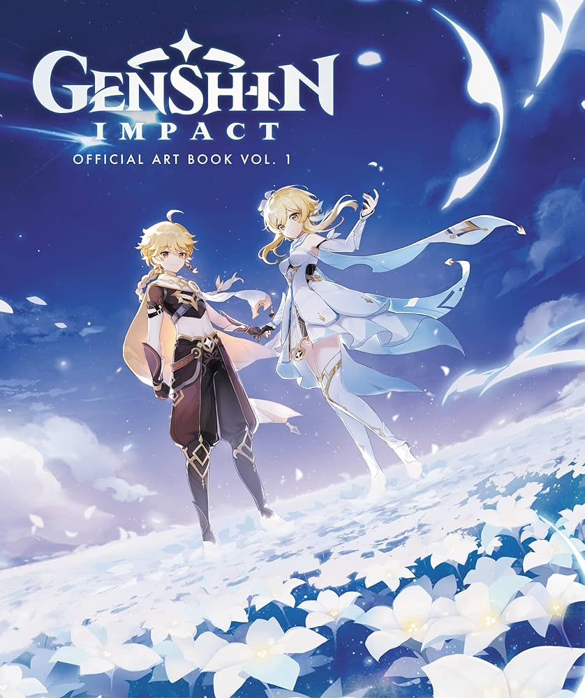
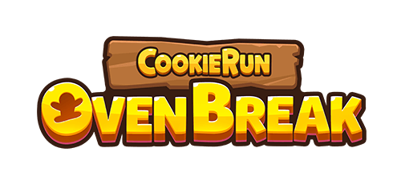

Introduced to me by a childhood friend who had moved away as a way to reconnect and talk more, Sky has become a staple for my daily tasks to do. That is to say, it is one of the games I make sure to get the daily rewards for every day. The two things I love the most about this game are the music and visuals. The music is very relaxing and something I often turn on in the background while the visuals transport me into another world that feels fantastical as I explore. My favorite realm/level is the hidden forest, a forest with constant downpour and a blue color palette. I like Hidden Forest the best because the music, combined with the sound of rain, is incredibly soothing.

Having started this game around the time it was first released, I remember being wowed by this game. Despite wanting to play more, due to hardware limitations, I had to stop. Once I had better hardware, I was able to start playing again and quickly caught up and cleared quests. Two things I enjoy about this game are the combat and music. While the combat is not super complicated, I still find it quite enjoyable, as combining elements to deal damage is very satisfying. As for the music, it can be both grand or simple, happy or melancholic, and exciting or relaxing. The variety of moods the music has is really nice because there is a song to match every mood.

The last game I’d like to briefly talk about is Cookie Run: Ovenbreak. For me, this game is hard to replace as I have seen nothing else like it. The simple gameplay loop is done perfectly for what it is, and for me at least, this is a game that I can pick up and just play. Not a lot of grinding, the music is catchy, and the controls are easy to use and pick up while also encouraging skilled gameplay. Two things I like about this game are the gameplay and characters. As previously mentioned, the gameplay is easy to start while also encouraging skilled gameplay. To clarify further, there may be simple controls, but the game can still provide a good challenge. When it comes to the characters, I like the creativity behind them. Because they are based on baked goods or other foods/things, it results in designs I would not have thought of when humanizing the very same concepts.